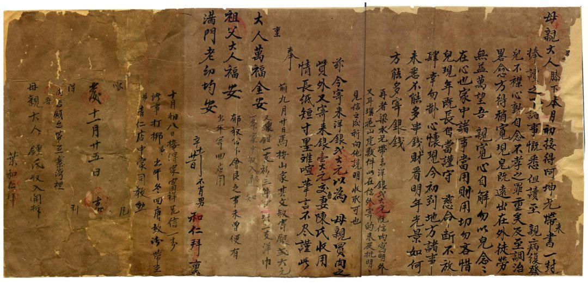
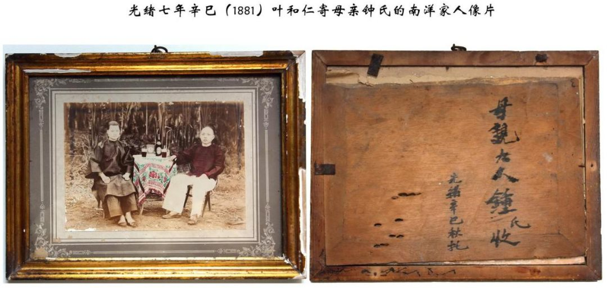

目录
首页

第 一 章
情长纸短
寸墨难喧
馆藏侨批档案介绍（一）
"情长纸短，寸墨难喧，笔言不尽……"
在汕头市档案馆藏侨批中，有一封光绪七年辛巳十一月廿一日（1882.1.10）叶和仁寄母亲钟氏书（详见《馆藏清代侨批选读》），留下了他对母亲的纯孝，对妻子的深情和对故里的一片乡愁。
馆 藏 原 件
光绪七年辛巳十一月廿一日 · 叶和仁寄母亲钟氏书
母亲大人膝下：
本月初接得阿坤兄带来书一封。捧读之下，诸事概悉。但读至亲病复发，儿不襟（禁）心动，自念不孝之罪重矣。及至调治略愈，方得稍宽。现儿既远出在外，徒劳无益，万望吾亲宽心自解，勿以儿念念在心也。家中诸事当用则用，切勿吝惜。儿现年既长，自当谨守慈命，断不放肆，幸勿挂心怀。现今初到地方，诸事未悉，不能多串（赚）钱财。看明年光景如何，方能多寄银钱。
再者，梁水兄带来洋银⑴弍大元，既信内写明，外又耳环花山虎⑵数件。此在信外寄的，未及批⑶明。见信之后，祈向他说明，收取可也。
兹今寄来洋银弍大元，以为母亲买肉之赀⑷。外又寄来银壹大元，交吾妻陈氏收用。情长纸短，寸墨难喧，笔言不尽，谨此奉禀。
大人万福金安
祖父大人福安
满门老幼均安
前九月廿日马按（鞍）山家其文叔寄银弍大元，又线钳⑸一支，衫三件，□□□二支，洋巾一条。家中收入，回信通知。
郁叔公分会⑹艮（银）之事，未曾便有，出年寄回应用。
辛十一月廿一日
不肖男和仁拜禀
外 封
内信烦台带至寨湾里吾母亲大人锺氏收入开拆
叶和仁拜
十月初八接得家富祥兄信一封，诸事打挷⑺。弟出年⑻冬回唐，敢请带至弟清仁店中，豪司教勳⑼。
顺 风 得 利
发十一月廿五日封
⑴洋银：旧称银币为"洋钱"、"洋银"，亦简称洋。如大洋、小洋。
⑵花山虎：一种金首饰花色。
⑶批：批写，写。
⑷赀："资"的异体字。资：财物、钱财。引申为钱、费用。
⑸线钳：钳子的一种。
⑹会：会，特指民间金融互助组织，如月兰会等。
⑺打挷：客家"阿姆话"，意为"多谢"。
⑻出年：潮梅方言，明年。出：超过。出年：过了年。
⑼豪司教勳：客家"阿姆话"。意思未详。
在信中，叶和仁得知母亲旧病复发，他便宽慰母亲"现儿既远出在外，徒劳无益，万望吾亲宽心自解，勿以儿念念在心也"，他又嘱咐母亲"家中诸事当用则用，切勿吝惜"。他又嘱咐妻子"洋银弍大元，以为母亲买肉之赀"，让妻子给母亲买肉来补身体。这一枚薄批、几句嘱言，加上任劳任怨、克勤克俭、一分一厘累积起来的血汗钱，充分体现了对亲人的深深的思念和拳拳关爱。
南洋家人

光绪七年辛巳（1881）· 叶和仁寄母亲钟氏的南洋家人像片
叶家四位"男丁"历经数载，在南洋站稳脚跟，节衣缩食，逐渐有了积蓄，而馆藏叶和仁、叶清仁、叶礼仁三兄弟自清光绪七年辛巳（1881）起至清宣统二年庚戌（1910）期间遗存的批信一百余封侨批，不仅是一张张汇款凭证，而且是侨胞家史的真实见证。